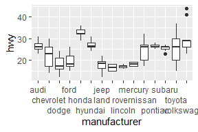

各位看客：
Learn-R 仍在写作流程中。本章节正在进行写作和结构调整，可能出现混乱或不完整的情况。
Learn-R 仍在写作流程中。本章节正在进行写作和结构调整，可能出现混乱或不完整的情况。
标度控制数据到美学的映射，它将数据转为大小（size）、颜色（color）、位置（position）或形状（shape），它也提供了解释绘图的工具：坐标轴和图例。
lims()或limits参数可用于修改坐标轴范围，需要接受长度为2的数值型向量。如果只设置单侧范围，另一侧设置为NA。
mpg %>% filter(year == 1999) %>%
ggplot(aes(displ, hwy)) +
geom_point() +
scale_x_continuous(limits = c(1, 7)) +
scale_y_continuous(limits = c(10, 45))
mpg %>% filter(year == 2008) %>%
ggplot(aes(displ, hwy)) +
geom_point() +
lims(x = c(1, 7), y = c(10, 45))如果目标是放大绘图的一部分，使用coord_cartesian()的xlim和ylim参数通常会更好。
base <- ggplot(mpg, aes(drv, hwy)) +
geom_hline(yintercept = 28, color = "red") +
geom_boxplot()
base
base + coord_cartesian(ylim = c(10, 35))
base + ylim(10, 35)
#> Warning: Removed 6 rows containing non-finite values (stat_boxplot).

base <- ggplot(faithfuld, aes(waiting, eruptions)) +
geom_raster(aes(fill = density)) +
theme(legend.position = "none") +
labs(x = NULL, y = NULL)
base
base +
scale_x_continuous(expand = expansion(0)) +
scale_y_continuous(expand = expansion(0))

base +
scale_x_continuous(expand = expansion(add = 3)) +
scale_y_continuous(expand = expansion(add = 3))
base +
scale_x_continuous(expand = expansion(mult = .2)) +
scale_y_continuous(expand = expansion(mult = .2))
base +
scale_x_continuous(expand = expansion(mult = c(.05, .2))) +
scale_y_continuous(expand = c(.05, 0, .2, 0))

add参数是在与数据变量相同的尺度上指定的，mult参数是相对于轴的范围指定的。
toy <- data.frame(
const = 1,
up = 1:4,
txt = letters[1:4],
big = (1:4) * 1000,
log = c(2, 5, 10, 2000)
)
toy
#> const up txt big log
#> 1 1 1 a 1000 2
#> 2 1 2 b 2000 5
#> 3 1 3 c 3000 10
#> 4 1 4 d 4000 2000通过向breaks参数传递数值，可手动设置断点。设置breaks = NULL移除断点和相关的刻度线。
base <- ggplot(toy, aes(big, const)) +
geom_point() +
labs(x = NULL, y = NULL) +
scale_y_continuous(breaks = NULL)
base
需注意，手动设置断点会移动主要和次要网格线：
base + scale_x_continuous(breaks = c(1000, 2000, 4000))
base + scale_x_continuous(breaks = c(1000, 1500, 2000, 4000))
也可以向breaks传递函数，该函数应有一个指定标度范围的参数（长度为2的数值型向量），并且返回断点的数值型向量。scales包(H. Wickham and Seidel 2022)提供了一些有用的工具：
scales::breaks_extended()为数值轴自动创建断点（ggplot2的标准方法）；scales::breaks_log()为对数轴自动创建断点；scales::breaks_pretty()为日期/时间创建断点；scales::breaks_width()创建等距的断点。base +
scale_x_continuous(breaks = scales::breaks_width(800))
base +
scale_x_continuous(breaks = scales::breaks_width(800, offset = 200)) # 偏移
base +
scale_x_continuous(breaks = scales::breaks_width(800, offset = -200))

次要断点（主网格线之间未标记的网格线）对于对数轴特别有用，因为它清晰地展示了刻度是非线性的。
mb <- unique(as.numeric(1:10 %o% 10 ^ (0:3)))
mb
#> [1] 1 2 3 4 5 6 7 8 9 10
#> [11] 20 30 40 50 60 70 80 90 100 200
#> [21] 300 400 500 600 700 800 900 1000 2000 3000
#> [31] 4000 5000 6000 7000 8000 9000 10000base <- ggplot(toy, aes(log, const)) +
geom_point() +
labs(x = NULL, y = NULL) +
scale_y_continuous(breaks = NULL)
base + scale_x_log10()
base + scale_x_log10(minor_breaks = mb)
base <- ggplot(toy, aes(big, const)) +
geom_point() +
labs(x = NULL, y = NULL) +
scale_y_continuous(breaks = NULL)
base
base + scale_x_continuous(
breaks = c(2000, 4000),
labels = c("2k", "4k")
)通常不需要手动设置labels参数，和breaks参数一样，scales包提供了有效的函数：
scales::label_bytes()将数字转化为kb、mb等字节格式；scales::label_comma()为数字添加逗号；scales::label_dollar()将数字转为货币；scales::label_ordinal()将数字转为等级顺序；scales::label_percent()将数字转为百分数；scales::label_pvalue()将数字转为p值。base <- ggplot(toy, aes(big, const)) +
geom_point() +
labs(x = NULL, y = NULL) +
scale_x_continuous(breaks = NULL)
base
base + scale_y_continuous(labels = scales::label_percent())
base + scale_y_continuous(labels = scales::label_dollar(prefix = "", suffix = "€")) # 默认前缀$
注意breaks = NULL和labels = NULL的差别：
base + scale_y_continuous(breaks = NULL)
base + scale_y_continuous(labels = NULL)

每一个连续的标度都带有允许使用各种转换的trans参数。
ggplot(mpg, aes(displ, hwy)) +
geom_point() +
scale_y_continuous(trans = "reciprocal") # y轴取倒数
# x和y轴取10为底的对数
ggplot(diamonds, aes(price, carat)) +
geom_bin2d() +
scale_x_continuous(trans = "log10") +
scale_y_continuous(trans = "log10")可以使用scales::trans_new()构建转换，scales包同样提供了许多常见的转换：
| Name | Transformer | Function \(f(x)\) | Inverse \(f^{-1}(x)\) |
|---|---|---|---|
"asn" |
scales::asn_trans() |
\(\tanh^{-1}(x)\) | \(\tanh(y)\) |
"exp" |
scales::exp_trans() |
\(e ^ x\) | \(\log(y)\) |
"identity" |
scales::identity_trans() |
\(x\) | \(y\) |
"log" |
scales::log_trans() |
\(\log(x)\) | \(e ^ y\) |
"log10" |
scales::log10_trans() |
\(\log_{10}(x)\) | \(10 ^ y\) |
"log2" |
scales::log2_trans() |
\(\log_2(x)\) | \(2 ^ y\) |
"logit" |
scales::logit_trans() |
\(\log(\frac{x}{1 - x})\) | \(\frac{1}{1 + e(y)}\) |
"probit" |
scales::probit_trans() |
\(\Phi(x)\) | \(\Phi^{-1}(y)\) |
"reciprocal" |
scales::reciprocal_trans() |
\(x^{-1}\) | \(y^{-1}\) |
"reverse" |
scales::reverse_trans() |
\(-x\) | \(-y\) |
"sqrt" |
scales::scale_x_sqrt() |
\(x^{1/2}\) | \(y ^ 2\) |
当然，也可以手动进行这些转换，绘制的图形外观是一样的，但是刻度标签将有所差异。具体来讲，如果使用转换标度，刻度标签将展示原始的数据空间；如果手动转换数据，刻度标签将展示转换后的数据空间。
# 手动转换数据
ggplot(mpg, aes(log10(displ), hwy)) +
geom_point()
# 转换标度
ggplot(mpg, aes(displ, hwy)) +
geom_point() +
scale_x_log10()
data_breaks参数允许以日期单位（年、月、星期、日、小时、分、秒）确定断点：
date_base <- ggplot(economics, aes(date, psavert)) +
geom_line(na.rm = TRUE) +
labs(x = NULL, y = NULL)
date_base
date_base + scale_x_date(date_breaks = "15 years")date_breaks = "15 years"是breaks = scales::breaks_width("15 years")的缩写。如果需要使用偏移，长格式更有用。比如绘制跨越一个日历年的数据，并按月划分：
the_year <- as.Date(c("2021-01-01", "2021-12-31"))
set_breaks <- scales::breaks_width("1 month")
set_breaks(the_year)
#> [1] "2021-01-01" "2021-02-01" "2021-03-01" "2021-04-01"
#> [5] "2021-05-01" "2021-06-01" "2021-07-01" "2021-08-01"
#> [9] "2021-09-01" "2021-10-01" "2021-11-01" "2021-12-01"
#> [13] "2022-01-01"在上面的例子中，scales::break_width()返回的set_breaks()函数产生了间隔一个月的断点，其中每个断点的日期都在该月的第一天。通常将每个断点放在日历年的开始位置，但也有例外。假如数据追踪的是一个家庭的收入和支出，其中每月的工资是在每个月的第九天支付。在这种情况下，更明智的做法是让断点与工资存款保持一致。要做到这一点，可以在定义set_breaks()函数时设置offset = 8：
set_breaks <- scales::breaks_width("1 month", offset = 8)
set_breaks(the_year)
#> [1] "2021-01-09" "2021-02-09" "2021-03-09" "2021-04-09"
#> [5] "2021-05-09" "2021-06-09" "2021-07-09" "2021-08-09"
#> [9] "2021-09-09" "2021-10-09" "2021-11-09" "2021-12-09"
#> [13] "2022-01-09"df <- data.frame(y = as.Date(c("2022-01-01", "2022-04-01")))
base <- ggplot(df, aes(y = y)) +
labs(y = NULL) +
theme_minimal() +
theme(
panel.grid.major = element_line(color = "black"),
panel.grid.minor = element_line(color = "grey50")
)
base + scale_y_date(date_breaks = "1 month")
base + scale_y_date(date_breaks = "1 month", date_minor_breaks = "1 week")日期刻度标签使用date_labels参数传递格式化字符串更加便捷。比如，14/10/1979可以使用字符串"%d%m%y"展示。字符串列表如下：
| String | Meaning |
|---|---|
%S |
second (00-59) |
%M |
minute (00-59) |
%l |
hour, in 12-hour clock (1-12) |
%I |
hour, in 12-hour clock (01-12) |
%p |
am/pm |
%H |
hour, in 24-hour clock (00-23) |
%a |
day of week, abbreviated (Mon-Sun) |
%A |
day of week, full (Monday-Sunday) |
%e |
day of month (1-31) |
%d |
day of month (01-31) |
%m |
month, numeric (01-12) |
%b |
month, abbreviated (Jan-Dec) |
%B |
month, full (January-December) |
%y |
year, without century (00-99) |
%Y |
year, with century (0000-9999) |
一个常用场景是：当没有足够的空间来指定四位数的年份时，使用%y可以确保只显示最后两位数字。
base <- ggplot(economics, aes(date, psavert)) +
geom_line(na.rm = TRUE) +
labs(x = NULL, y = NULL)
base + scale_x_date(date_breaks = "5 years")
base + scale_x_date(date_breaks = "5 years", date_labels = "%y")格式化字符串中包含换行符（\n）在文本较长的情况下可能很有用：
lim <- as.Date(c("2004-01-01", "2005-01-01"))
base + scale_x_date(limits = lim, date_labels = "%b %y")
base + scale_x_date(limits = lim, date_labels = "%B\n%Y")scales包提供了方便生成标签的函数，data_labels已经调用了scales::label_date()。scales::label_date_short()需要在labels参数中明确调用，该函数自动构建足以唯一识别日期的短标签：
base +
scale_x_date(
limits = lim,
labels = scales::label_date_short()
)这通常可以产生更清晰的图表：在上面的例子中，每个年份只被标示一次，而不是出现在每个标签中，减少了视觉上的混乱，使读者更容易看到每个年份的开始和结束。
在内部，ggplot2将每个离散标度映射到整数值，然后在相应的坐标位置进行绘制。
ggplot(mpg, aes(hwy, class)) +
geom_point() +
annotate("text", x = 5, y = 1:7, label = 1:7)分类变量映射到整数值意味着其他宽度量可以被指定为分类范围的比例，在上面的例子中，我们可以指定在一半高度内的垂直抖动：
ggplot(mpg, aes(hwy, class)) +
geom_jitter(width = 0, height = .25) +
annotate("text", x = 5, y = 1:7, label = 1:7)
同样的机制也应用于柱状图、箱型图的宽度：
ggplot(mpg, aes(drv, hwy)) + geom_boxplot()
ggplot(mpg, aes(drv, hwy)) + geom_boxplot(width = .4)尽管存在一些不同，大多数情况下，这些参数与数值型标度一致。比如离散型的limits不是通过端点来确定的，取而代之的是变量的一组允许的值。因此，离散值的limits应该是一个字符串向量，并按照它们出现的顺序绘制所有可能的值。
base <- ggplot(toy, aes(const, txt)) +
geom_label(aes(label = txt)) +
scale_x_continuous(breaks = NULL) +
labs(x = NULL, y = NULL)
base
base + scale_y_discrete(limits = letters[1:5])
base + scale_y_discrete(limits = c("d", "c", "a", "b"))breaks参数基本没有变化，主要用于列举一组要现实在坐标轴标签上的值。labels参数多了一些额外的功能：可以选择使用命名向量设置特定的标签：
base + scale_y_discrete(breaks = c("b", "c"))
base + scale_y_discrete(labels = c(c = "carrot", b = "banana"))与其他标度一样，离散位置标度允许向labels参数传递函数。scales::label_wrap()函数可以将长标签分割为多行。
在绘制分类数据时，经常需要以某种方式移动轴的标签，防止它们重叠。
base <- ggplot(mpg, aes(manufacturer, hwy)) + geom_boxplot()
base即使分配了大量的水平空间，轴的标签也会有相当程度的重叠。我们可以利用guides()函数进行控制，它的工作方式与 sec-labs 中的labs()函数类似。两者都以不同美学的名称（如color、x、fill）为参数，并允许指定想要的值。对于位置美学，我们使用guide_axis()来告诉ggplot2我们想如何修改轴的标签。例如，我们可以设置guide_axis(n.dodge= 3)来告诉ggplot2躲避标签的位置，或者设置guide_axis(rotate = 90)来旋转它们。
base + guides(x = guide_axis(n.dodge = 3))
base + guides(x = guide_axis(angle = 90))
与labs()是将name参数指定到一个或多个尺度的快捷方式一样，guides()函数也将guide参数指定为一个或多个尺度的快捷方式。下面的代码可以实现同样的结果：
base + scale_x_discrete(guide = guide_axis(n.dodge = 3))
base + scale_x_discrete(guide = guide_axis(angle = 90))离散位置标度的一个变种是分档标度，即把一个连续变量切成多个分档并绘制离散变量。下面的例子显示了如何使用geom_bar()与分档位置标度相结合来接近geom_histogram()的行为。
ggplot(mpg, aes(hwy)) + geom_histogram(bins = 8)
ggplot(mpg, aes(hwy)) + geom_bar() + scale_x_binned()将该技术拓展，假设我们想用geom_count()来代替geom_point()，以展示每个位置的观测值的数量。geom_count()的优点是每个点的大小与每个位置的观测值的数量成比例，但是当数据连续变化时，效果并不理想。为此可以使用scale_x_binned()在数值传递给图形前将其分割。
base <- ggplot(mpg, aes(displ, hwy)) +
geom_count()
base
base +
scale_x_binned(n.breaks = 15) +
scale_y_binned(n.breaks = 15)本节中使用的scale_fill_*()，都有一个对应的scale_color_*()与之对应。
erupt <- ggplot(faithfuld, aes(waiting, eruptions, fill = density)) +
geom_raster() +
scale_x_continuous(NULL, expand = c(0, 0)) +
scale_y_continuous(NULL, expand = c(0, 0)) +
theme(legend.position = "none")viridis标度的设计在颜色和被还原为黑白时都是统一的，并且对有各种形式的色盲的人来说都是可以感知的。
erupt
erupt + scale_fill_viridis_c()
erupt + scale_fill_viridis_c(option = "magma")大多数情况下，viridis标度会比ggplot2中内置的其他连续标度效果更好，但在某些情况下，还有其他选项也很有用。ggplot2内置的第二组连续颜色标度是由ColorBrewer标度派生出来的：scale_fill_brewer()将这些颜色作为离散调色板提供，而scale_fill_distiller()和scale_fill_fermenter()是连续和分档的类似物。
erupt + scale_fill_distiller()
erupt + scale_fill_distiller(palette = "RdPu")
erupt + scale_fill_distiller(palette = "YlOrBr")还有许多其他软件包提供了有用的调色板。例如，scico包(Pedersen and Crameri 2021)提供了更多知觉上统一，适合于科学可视化的调色板：
erupt + scico::scale_fill_scico(palette = "bilbao") # 默认
erupt + scico::scale_fill_scico(palette = "vik")
erupt + scico::scale_fill_scico(palette = "lajolla")由于R中存在大量的调色板包，提供一个通用的接口的paletteer包(Hvitfeldt 2021)特别有用:
erupt + paletteer::scale_fill_paletteer_c("viridis::plasma")
erupt + paletteer::scale_fill_paletteer_c("scico::tokyo")
erupt + paletteer::scale_fill_paletteer_c("gameofthrones::targaryen")scale_fill_continuous()默认使用了scale_fill_gradient()。梯度标度使用了插值：
erupt + scale_fill_gradient(low = "grey", high = "brown")
erupt +
scale_fill_gradient2(
low = "grey",
mid = "white",
high = "brown",
midpoint = .02
)
erupt + scale_fill_gradientn(colors = terrain.colors(7))创造好的调色板需要谨慎。一般来说，对于一个两点式的渐变色标，你想传达d 是数值是按顺序排列的，所以你想保持色相不变，而改变色度和亮度。Munsell颜色系统提供了基于色相、色度和亮度的简单方法来指定颜色，在这方面很有用。munsell包(C. Wickham 2018)提供了对Munsell颜色的简单访问，然后可以用它来指定一个渐变色标：
munsell::hue_slice("5P") +
annotate(geom = "segment",
x = c(7, 7), y = c(1, 10),
xend = c(7, 7), yend = c(2, 9),
arrow = arrow(length = unit(2, "mm"))
)
#> Warning: Removed 31 rows containing missing values (geom_text).
# 组成标度
erupt + scale_fill_gradient(
low = munsell::mnsl("5P 2/12"),
high = munsell::mnsl("5P 7/12")
)
连续色标利用na.value参数控制缺失值（包括超出色标限制范围的值）的颜色。默认情况为灰色，当使用彩色比例尺时，它会很突出。可以设置na.value = NA使缺失的数值不可见；或者选择一个特定的颜色。
df <- data.frame(x = 1, y = 1:5, z = c(1, 3, 2, NA, 5))
base <- ggplot(df, aes(x, y )) +
geom_tile(aes(fill = z), size = 5) +
labs(x = NULL, y = NULL) +
scale_x_continuous(labels = NULL)
base
base + scale_fill_gradient(na.value = NA)
base + scale_fill_gradient(na.value = "yellow")base <- ggplot(toy, aes(up, up, fill = big)) +
geom_tile() +
labs(x = NULL, y = NULL)
base
base + scale_fill_continuous(limits = c(0, 10000))base + scale_fill_continuous(breaks = c(1000, 2000, 4000))
base + scale_fill_continuous(labels = scales::label_dollar())
每个刻度都与一个指南（guide）关联，以显示美学和数据之间的关系。对于位置标尺，轴起到了这个作用；对于彩色刻度，这个作用由图例来扮演，图例可以在指南功能的帮助下进行定制。对于连续色标，默认图例采用“色条”的形式，显示连续的颜色梯度。
图例的外观可以用guide_colourbar()来控制。这个函数有许多参数，允许对图例进行精准控制。最重要的参数说明如下:
reverse：反向翻转色条，将最小值放在顶部。barwidth和barheight指定色条的大小。使用网格单位，例如unit(1, "cm")。direction指定guide的方向，"horizontal"或者"vertical"。base <- ggplot(mpg, aes(cyl, displ, color = hwy)) +
geom_point(size = 2)
base + guides(color = guide_colorbar(reverse = TRUE))
base + guides(color = guide_colorbar(barheight = unit(2, "cm")))
base + guides(color = guide_colorbar(direction = "horizontal"))下面两种写法的结果是一样的：
base + guides(color = guide_colorbar(reverse = TRUE))
base + scale_color_continuous(guide = guide_colorbar(reverse = TRUE))